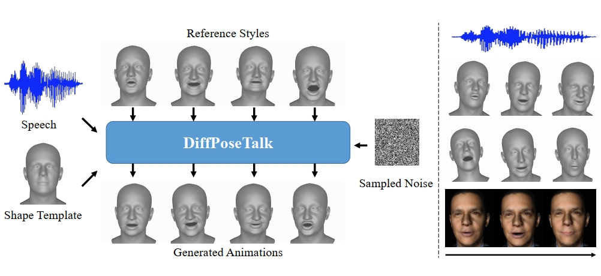
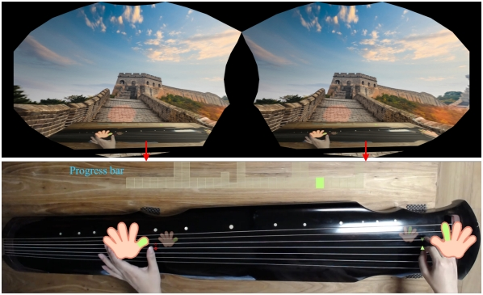
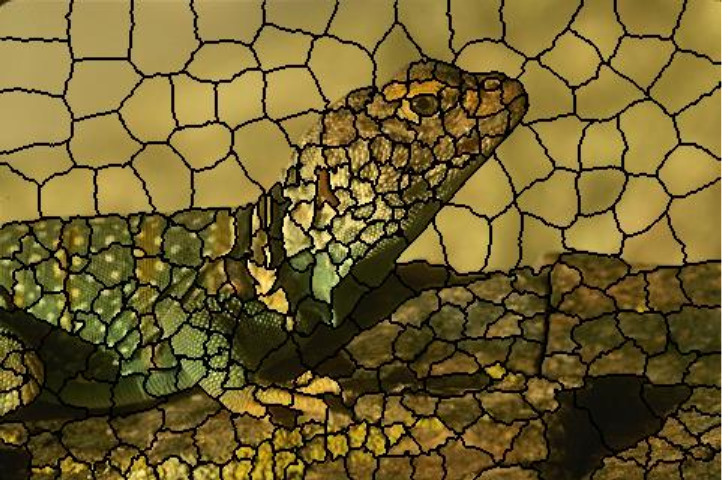

|
Yu Minjing (余旻婧) |
BiographyYu Minjing is an Associate Professor with College of Intelligence and Computing, Tianjin University, China. She obtained her Bachelor's degree in Engineering from Wuhan University in 2014 and her PhD from Tsinghua University in 2019, under the supervision of Professor Liu Yongjin. Her research interests include Computer Graphics, Computer Vision, and Cognitive Computing |
[ Research Interests
| Publications
| Education
| Working
| Patents
]
Research Interests Top
Computer Graphics
Computer Vision
Cognitive Computation
Selected Publications
Top
|
Minjing Yu*, Li Wang, Mingxu Cai, et al. |
|
 |
Yong-Jin Liu, Baodong Wang, Lin Gao, Junli Zhao, Ran Yi, Minjing Yu*, Zhenkuan Pan, Xianfeng Gu. |
 |
Yanan Sun, Zhiyao Sun, Yu-Hui Wen, Sheng Ye, Tian Lv, Minjing Yu*, Ran Yi, Lin Gao, Yong-Jin Liu. |
|  |
Zhiyao Sun, Tian Lv, Sheng Ye, Matthieu Gaetan Lin, Jenny Sheng, Yu-Hui Wen, Minjing Yu*, Yong-jin Liu. |
 |
Lianghao Zhang, Fangzhou Gao, Li Wang, Minjing Yu*, Jiamin Cheng, Jiawan Zhang. |
 |
Yong-Jin Liu, Xinge Liu, Chao Zhou, Shu Zhang, Niqi Liu, Zixi Liu, Shaocong Wang, Minjing Yu*. |
|
Ran Yi, Rui Zeng, Yang Weng, Minjing Yu*, Yu‐Kun Lai, Yong‐Jin Liu. |
|
 |
Zipeng Ye, Mengfei Xia, Yanan Sun, Ran Yi, Minjing Yu*, Juyong Zhang, Yu-Kun Lai, Yong-Jin Liu. |
|  |
Minjing Yu*, Meng Zhang, Chun Yu, Xiaoguang Ma, Xing-Dong Yang, Jiawan Zhang. |
 |
Guanhua Zhang, Minjing Yu*, Yong-Jin Liu, Guozhen Zhao, Dan Zhang, Wenming Zheng. |
|
Ran Yi, Zipeng Ye, Wang Zhao, Minjing Yu, et al. |
|
|
Zipeng Ye, Minjing Yu, Yong-Jin Liu. |
|
|
Aihua Mao, Hong Zhang, Zhenfeng Xie, Minjing Yu*, Yong-Jin Liu*, Ying He. |
|
|
Zipeng Ye, Ran Yi, Minjing Yu*, Yong-Jin Liu, Ying He. |
|
 |
Minjing Yu, Yong-Jin Liu, Yulin Zhang, et al. |
 |
Minjing Yu, Zipeng Ye, Yong-Jin Liu, et al. |
 |
Zipeng Ye, Ran Yi, Minjing Yu*, Yong-Jin Liu*, Ying He. |
|
张冠华, 余旻婧, 陈果, 等. |
|
|
Minjing Yu*, Yong-Jin Liu, Guozhen Zhao, Charlie CL Wang. |
|
|
Minjing Yu*, Yong-Jin Liu, Guozhen Zhao, Chun Yu, Yuanchun Shi. |
|
 |
刘永进, 余旻婧, 叶子鹏, 等. |
 |
Minjing Yu, Yong-Jin Liu, Charlie C. L. Wang. |
|  |
Yong-Jin Liu, Minjing Yu, Bing-Jun Li, et al. |
 |
Yong-Jin Liu, Minjing Yu, Guozhen Zhao, et al. |
|
Yong-Jin Liu, Minjing Yu, Qiufang Fu, et al. |
|
 |
Minjing Yu, Yong-Jin Liu, Su-Jing Wang, et al. |
|
Yong-Jin Liu, Chengchi Yu, Minjing Yu, et al. |
|
 |
Yong-Jin Liu, Chengchi Yu, Minjing Yu, et al. |
Education Top
2014/09–2019/07: Tsinghua University, Department of Computer Science and Technology, PhD
2010/09–2014/06: Wuhan University, School of Computer Science, BSc
Working Experience Top
2019/07–Present: Tianjin University, College of Intelligence and Computing, Associate Professor
Patents Top
1.刘永进, 余旻婧. 模块化机器人内部结构优化方法
2.刘永进, 余旻婧. 一种自重构机器人单元模块
3.刘永进, 余旻婧, 等. 一种舵机传动的模块化变形机器人
4.刘永进, 余旻婧, 等. 一种用于 SLA3D 打印机的平面分割方法及装置
5.刘永进, 俞承驰，余旻婧. 一种基于全局能量函数优化的图像层次提取与编辑方法